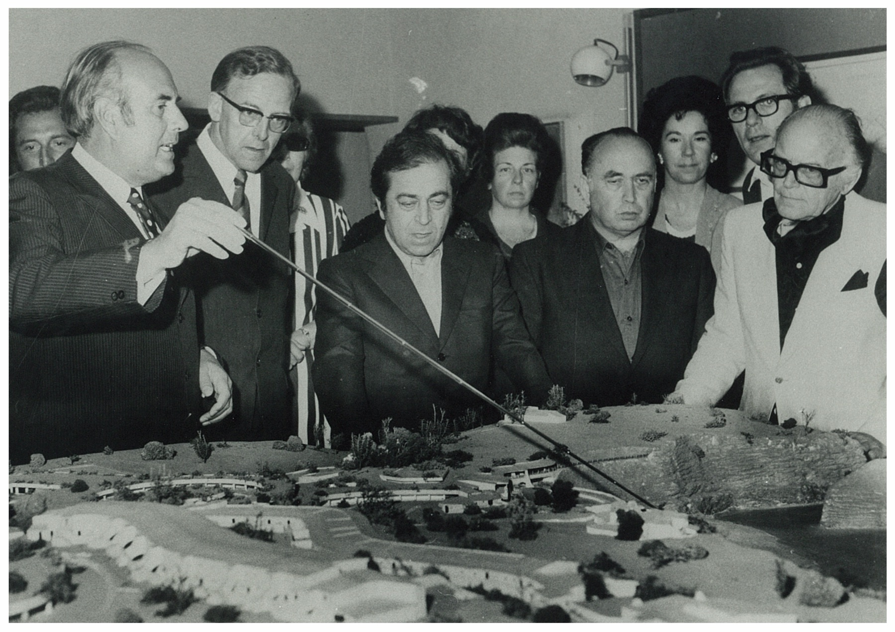

Uma visão do marSardenha portuguesa
1966
George Ansley, um visionário inglês, embarcou numa viagem de barco ao longo da costa algarvia e foi no meio destas deslumbrantes falésias da Praia das Gaivotas que descobriu um terreno de 11 hectares que fez despertar a sua imaginação.
Inspirado pela beleza única da Costa Esmeralda da Sardenha, o visionário inglês projetou neste cenário a criação de um local de renome mundial, com moradias exclusivas e condições de excelência. Deste sonho nasceu o início da história do Vilalara.